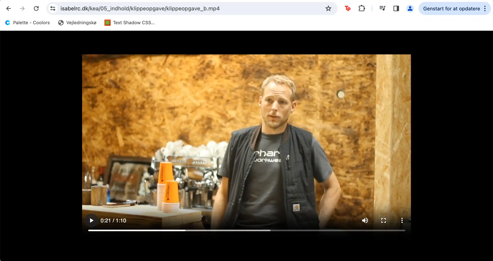
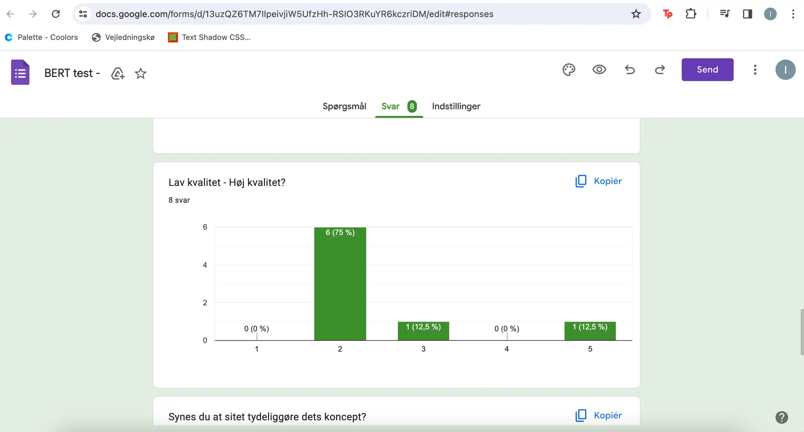
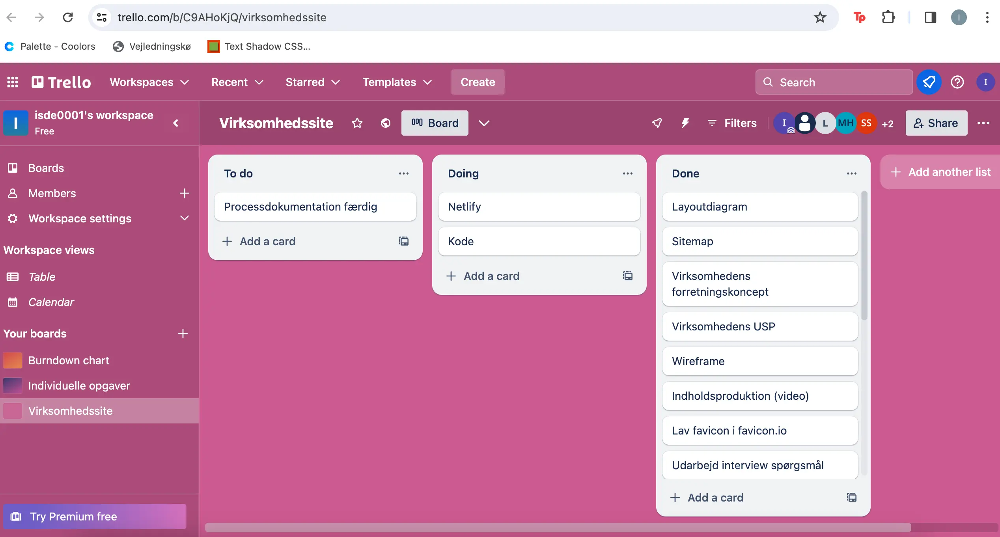
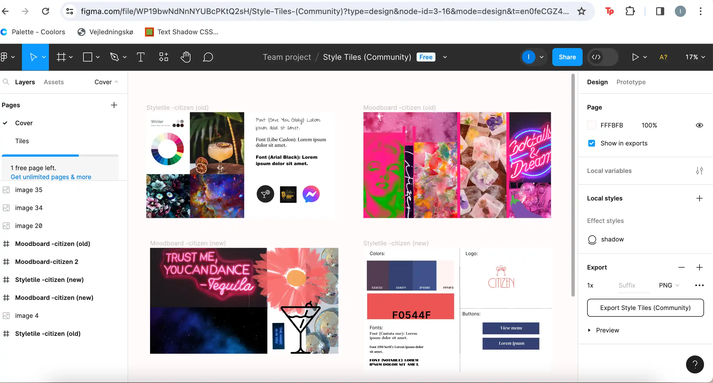
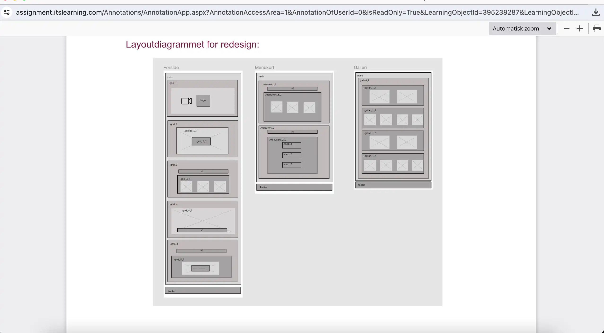
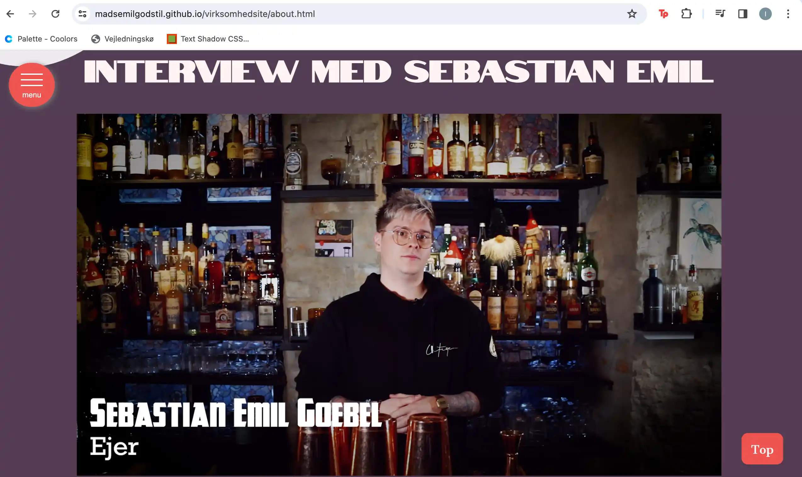
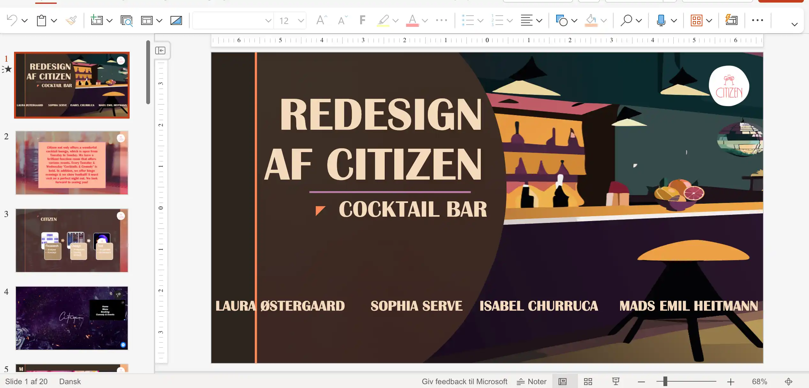

Tema 5 - Indhold
Temabeskrivelse
Temaet varede 4 uger, hvor den første 1 1/2 uge lærte vi grundlæggende optagelse samt redigering af video i Premiere Pro og kode et site med video. I begyndelsen fik vi noget videomateriale "Carhartt videoer", hvor vi kunne øve os i redigering i Premiere Pro. Målet var at lave et "Videosite" med materiale vi selv har optaget. Det skulle inkludere et interview af en person, der beretter om sin passion med en varighed på 60 sek. I løbet af processen kiggede vi også på team roles og group formation. I denne forbindelse blev vi introduceret for Basadur profile, Ponytails Propheads & Suits metoden og Belbins test, som kunne bruges som værktøjer til at danne en dynamisk gruppe. Til sidst udfyldte vi et Team Canvas for at få et overblik over hvilke roller, som skulle uddeles, værdier og mål. I forløbet fik vi også en mere dybdegående guide til GitHub og GitHub Pages, hvor vi tilkoblede VisualCode til Github så man kunne initialize sine repositories.
De sidste 2 1/2 uge blev vi introduceret for grundlæggende faglige begreber inden for video og fotoproduktion, og derefter benyttede vi de færdigheder, som vi har fået i de foregående temaer til at løse "Virksomhedssite" opgaven. Formålet var at producere nyt layout, fotos og video til en virksomhed samt redesigne deres nuværende hjemmeside.
Hvad har jeg tilegnet mig?
- Premiere Pro
- Filformater
- Sitemap
- Videoproduktion
- Præ-og postproduktion
- Udvikling af website design og layout
- SCRUM og Trello elementer
- Pecha Kucha
Afleveringer
- 05.01.a Video Klippeopgave 1
- 05.01.b Videoklippeopgave 2
- 05.01.01 Videosite
- 05.02.01 Virksomhedssite
- Procesdokumentation af redesign
- Pitch af re-design
Proces - Video og Virksomhedssite
Klippeopgaver
Tech & Story Lab
05.05.01 Videosite
Vi startede med klippeopgaverne, som indledte introduktionen til Premiere Pro. For mit vedkommende var det første gang, at jeg redigerede i dette program. Jeg lærte at oprette nye projekter, importere videofiler, flytte filerne fra Project Panel til Timeline, cutte i klippene og eksportere til webM. Ydermere lærte jeg om motion graphics (fx. rulletekser), b-roll klip og establishing shot. Derudover lærte jeg også at implementere et videotag i HTML. Dernæst kiggede vi på filmeteknikker fx. 5-skudsreglen, der inkluderer et totalbillede, halvtotal, nærbillede, over-the-shoulder og et point of view klip. I forløbet besøgte vi Tech & Story Lab, hvor min gruppe og jeg lånte lys, stativer, kamera og mikrofon til at få det bedst mulige indhold til både videosite-og virksomhedssopgaven.
Research & test
Trello-board
 05.02.01 Virksomhedssite - Research, Test & Trello
Efter jeg og min makker havde afleveret Videosite-opgaven, så kunne min gruppe og jeg begynde med at finde en virksomhed. Min rolle var at tage kontakt til disse virksomheder. Her oplevede jeg udfordringer i og med, at svar-tiden kunne være ret lang eller så forlangede en virksomhed, som jeg fik kontakt til, at vi skulle stå for hele deres hjemmeside og kom med diverse ønsker. Det sørgede jeg hurtigt for at vi kom ud af igen, og til sidst fandt vi så cocktailbaren "Citizen" lokaliseret inde i Indre By.
Herefter gik vi mere i dybden med vores research ved at kigge på virksomhedens forretningskoncepter herunder afsender, målgruppe, produkter/services og dets USP (Unique Selling Propositions). Vi besluttede os for denne virksomhed, da deres hjemmeside blot var en one-page med en mangelfuld funktionalitetsliste. Som en del af researchen, aftalte vi i gruppen at tage ud og besøge Citizen blot for at mærke stemningen, hilse på bartenderne og tage nogle stil-billeder. Dette inspirerede os til at indkapsle stemningen til et redesign af deres hjemmeside.
Dernæst lavede vi en BERT (Bipolær Emotionel Respons Test) på hjemmesiden, så vi fik et udgangspunkt til hvilke fokusomårder, der kunne forbedre et redesign. Eksempelvis fandt vi ud af, at langt de fleste testpersoner ikke fik den information de søgte, at sitet var grimt, utroværdigt og af lav kvalitet. Vores mål var primært at få redesignet til at være mere stilrent og at sitet skulle have en mere tiltrækkende/nemmere måde a booke bord og events på.
Vi blev herefter introduceret til Trello, som er en web-baseret platform, hvor vi som gruppe fik mulighed for at lave en To-do liste opdelt i tre processer "To do, Doing og Done". Dette medvirkede til at alle gruppemedlemmer til hver en tid kunne tilgå hvorhenne i processen vi var.
Moodboards & Styletiles
Layoutdiagram
 05.02.01 Virksomhedssite - Designproces
Efter at have researchet, testet sitet - kunne vores egen designproces begynde. I første billede ovenover ses 4 boards i Figma - øverste række er inspireret af det originale site, hvorimod nederste række repræsenterer vores foreslag på et re-design. Vores fokusområder her var b.la. at gøre redesignet mere moderne (da ændrede vi logo'et), give sitet en overordnet farvepalette, så der er en rød tråd. Derudover besluttede vi at lave en side med et galleri, da dette muligvis kunne være med til at optimere kvaliteten af sitet og give brugeren et indblik i stedets ambience, så man får lyst til at besøge det. Dette kan man også se i "Layoutdiagram"-billedet.
Sitemap og layoutdiagram var nogle design-værktøjer, som vi valgte at bruge eftersom det lagde et tydeligt skelet af vores site og som guide til kodningen. I sammenhæng med dette, så lavede vi vores moodboards og styletiles af både nuværende hjemmeside samt vores bud på et redesign. I vores moodboard bestræbede vi os på nøgleordene: "maskulint, retro, eksklusivt, moderne og autencitet".
Filmedag
Pecha Kucha
 05.02.01 Virksomhedssite - Filmedag og Pecha Kucha
Anden gang vi besøgte Citizen var filmedag. Her satte vi al vores udstyr op og jeg havde rollen som interviewer, så jeg havde naturligvis forberedt nogle spørgsmål til ejeren af baren, Sebastian Emil. Efter interviewet tog vi nogle flere b-roll klip og flere billeder. Optagelserne brugte vi også til vores kvadratiske video. Jeg ville gerne blive bedre i Premiere Pro, så Mads klippede alt det rå materiale sammen, hvor jeg derefter klippede alle de lange pauser ud, lagde b-rolls indover og fundet rettighedsfrit underlægningsmusik via Pixabay.
Til slut i forløbet lavede vi vores Pecha Kucha præsentation. Konceptet af Pecha Kucha var nyt for os alle, men det fungerede godt med at have blot 20 slides, der vises i 20 sek hver, som gav en præsentationstid på præcis 6 min. og 40 sek. Vi afspillede også vores videoer for klassen samt viste vores redesign.